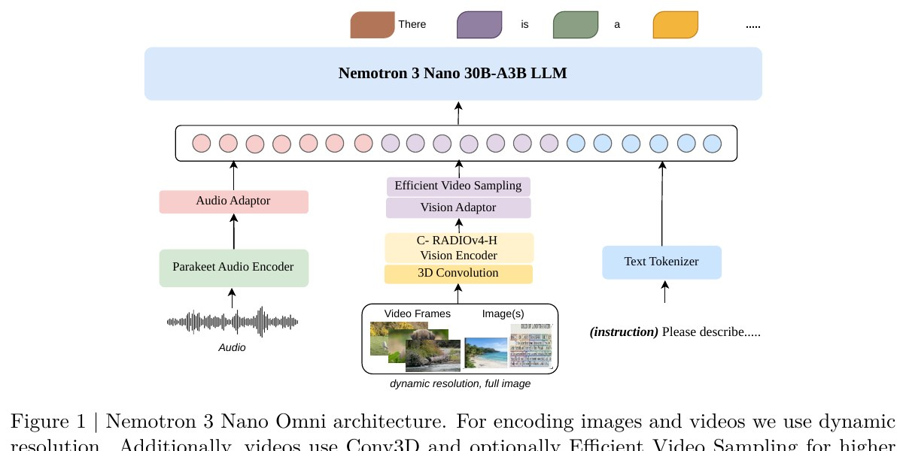
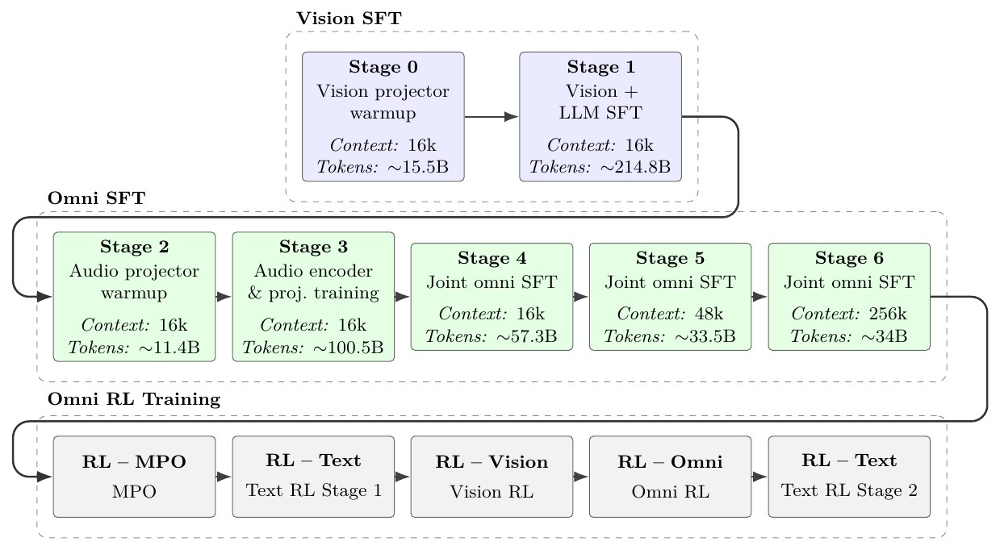

速览
五句话看懂
换底座 + 加音频，结构是常规拼接
encoder–projector–decoder：30B-A3B MoE 混合 LLM + C-RADIOv4-H + Parakeet 音频编码器，视觉 / 音频 / 文本 token 拼接后送入 LLM，音视频按时间顺序交错§2 · 图 1。上下文 128K → 256K§1。
7 段 SFT，配比全公开
先视觉（Stage 0–1，230.3B token推算），再音频（Stage 2–3，111.9B推算），再联合 omni 16k → 48k → 256k表 1。每段给出按类别的样本数、token 数与占比表 2–5，比多数报告透明。
数据几乎都是「抽元数据 → LLM 生成」
视觉 QA 由 Qwen3-VL / Qwen3.5 / GPT-OSS / Nemotron-Parse / DeepSeek-OCR 生成后「严格过滤」§3.1.2；音视频先用 Qwen3-Omni-30B-A3B 抽元数据，再由 GPT-OSS-120B 生成 QA 与 caption§3.1.5–3.1.6。过滤标准未披露。
效率是主卖点
Conv3D 两帧并一 + 运行时 EVS 剪枝，BF16 TTFT 7969 → 5313 ms（−33%），256 帧平均准确率 66.72 → 66.32表 12。B200 上单流 >500 tok/s，约为 Qwen3-Omni 的 2.4–2.9ק4.8。
「全面领先」需要打折
对 Qwen3.5-Omni（Flash，未开源）多数可比项落后：DailyOmni 74.5 vs 81.8，VideoMME 72.2 vs 77.0表 7 · 表 9。文本侧比自家底座 AIME25 低 7.0、LiveCodeBench 低 5.1表 10。
架构：encoder–projector–decoder
Nemotron 3 Nano 30B-A3B 做 LLM，视觉、音频各自一个编码器，经 MLP projector 接入；三路 token 拼接后进 LLM§2。

相对 Nemotron Nano V2 VL 的五项改动 §1
1LLM 换成 MoE 混合底座
12B 稠密混合底座 → Nemotron 3 Nano 30B-A3B MoE 混合底座，目的是处理长多模态序列并提高吞吐§1。量化一节提到含 Mamba 层与 attention 层§4.7。
2原生音频输入
16 kHz 单声道 → log-mel（10 ms hop）→ 3 层 stride-2 卷积，约 8× 下采样 → 约 12.5 token/s（≈80 ms/token）。按 30 s 切段（≈375 token/段），不足 30 s 不 padding§2。
3动态分辨率替代 tiling
保持原始宽高比，按 16×16 切 patch，每图视觉 token 限制在 1,024–13,312（方图约 512² 到 1840²）；进 projector 前 pixel shuffle 4× 下采样§2。
4Conv3D 时间压缩
视频每 2 帧经 Conv3D 合成一个 tubelet，视频 token 减半；训练、推理都生效§2 · §4.6。
5上下文 128K → 256K
Stage 6 以 262,144 长度训练，主打 10 到 100+ 页长文档§3.1.7。音频训练长度 0.5 s–20 min，上下文可容纳 5 小时以上音频§2。
运行时EVS：只在推理时剪 token
在 ViT 与 vision adapter 之后、进 LLM 之前，对每个空间位置算相邻 tubelet 的余弦差异，按剪枝率 q 保留全局最不相似的 token；首个 tubelet 全部保留作锚点§4.6。
视频 token 怎么被压两次
数据：每段 SFT 吃什么
原文给了 SFT 每段的样本数与 token 数（含样本重复、含被 mask 的 prompt token）表 1，Stage 3–6 还有按类别的 token 占比表 2–5。下面的比例条全部来自原表，不是本页估算。
已披露规模：SFT 七段
| 阶段 | 样本 | Tokens | 主要数据域 | 数据怎么来 |
|---|---|---|---|---|
| Stage 0 | 9.35M | 15.5B | Captioning、OCR、文档、VQA | Stage 1 数据的一部分；含 caption、grounding、OCR、文档、GUI、通用 VQA §3.1.1 |
| Stage 1 | 86.3M | 214.8B | 综合视觉-语言 SFT | 在 V2 VL 的 SFT Stage 1 数据上增强：重标注、补推理链、扩领域、全合成管线 §3.1.2 |
| Stage 2 | 59.2M | 11.4B | ASR（Granary） | Granary v1.1 ASR，多声学条件 / 说话风格 / 语言 §3.1.3 |
| Stage 3 | 242.0M | 100.5B | ASR、声音、音乐、语音理解 | Qwen3-Omni-30B-A3B 出 caption、音乐工具出元数据，GPT-OSS-120B 生成 QA §3.1.4 |
| Stage 4 | 30.5M | 57.3B | 视觉、视频、音频、文本、omni、安全 | <2 分钟视频抽音视频元数据 → QA / 摘要 §3.1.5 |
| Stage 5 | 6.08M | 33.5B | 长视频、omni、推理 | 视频切 20 s 段抽元数据 → QA + 推理链；加入 Nemotron 3 Super 安全数据 §3.1.6 |
| Stage 6 | 623K | 34.0B | 超长文档、长上下文文本 | 论文 / 财报 / 演示文稿，VLM 在页、多页、全文档三级生成 QA 与推理链 §3.1.7 |
| 合计 | 434.1M | 466.9B | 含样本重复 表 1 | |
来源：表 1（原文标注为近似值），「数据怎么来」列摘自 §3.1.1–3.1.7。七段 token 逐项相加为 467.0B推算，与表中合计 466.9B 的差来自四舍五入。
配比：原文给了 token 占比的四段
Music understanding 只有 19.8M 样本却占 43.5B token，平均约 2.2k token/样本；ASR 113.8M 样本仅 22.8B，约 200 token/样本推算。音乐片段明显更长。
两类 safety 各约 10M token（0.02%）；omni 数据只有 short video omni 一项（251K 样本、1.6B）表 3。
48k 段把 omni（中长）推到 39.1%，短视频 / 短 omni 被下采样§3.1.6 · 表 4。
256k 段 90.9% 是长上下文视觉（508K 样本、30.9B）；不含音频，音频编码器与 projector 冻结§3.1.7 · 表 5。
Stage 0–2 无类别拆分：Stage 2 只有 Granary ASR；Stage 0、1 的领域配比原文未披露。
Stage 3–6 原始配比表 表 2 / 3 / 4 / 5 · 样本数、token 数、占比
| Stage 3（表 2） | 样本 | 占比 | Tokens |
|---|---|---|---|
| ASR | 113.8M | 22.7% | 22.8B |
| Sound understanding | 61.0M | 24.4% | 24.5B |
| Music understanding | 19.8M | 43.3% | 43.5B |
| Speech understanding | 47.5M | 9.6% | 9.6B |
| Total | 242.0M | 100.5B |
| Stage 4（表 3） | 样本 | 占比 | Tokens |
|---|---|---|---|
| Vision data | 14.6M | 53.4% | 30.6B |
| Text data | 948K | 6.1% | 3.5B |
| Text safety data | 14K | 0.02% | 10.4M |
| Image safety data | 9K | 0.02% | 10.0M |
| Short video data | 1.3M | 11.0% | 6.3B |
| Short video reasoning data | 388K | 4.2% | 2.4B |
| Short video omni data | 251K | 2.8% | 1.6B |
| ASR data | 2.9M | 1.1% | 640M |
| Audio reasoning data | 765K | 4.4% | 2.5B |
| Audio data | 9.3M | 16.9% | 9.7B |
| Total | 30.5M | 57.3B |
| Stage 5（表 4） | 样本 | 占比 | Tokens |
|---|---|---|---|
| ASR | 650K | 0.4% | 0.12B |
| Audio | 2.84M | 11.3% | 3.80B |
| Vision | 1.17M | 9.8% | 3.28B |
| Text | 101K | 7.2% | 2.42B |
| Safety | 45K | 0.1% | 0.04B |
| Video (short) | 25K | 0.6% | 0.21B |
| Video (medium) | 96K | 5.8% | 1.95B |
| Video (long) | 74K | 3.3% | 1.11B |
| Video reasoning | 167K | 10.2% | 3.42B |
| Omni (short) | 6K | 0.3% | 0.09B |
| Omni (medium+long) | 710K | 39.1% | 13.10B |
| Omni reasoning | 198K | 11.8% | 3.94B |
| Total | 6.08M | 100% | ∼33.5B |
| Stage 6（表 5） | 样本 | 占比 | Tokens |
|---|---|---|---|
| Long Context Vision | 508K | 90.9% | 30.9B |
| Text | 63K | 7.3% | 2.5B |
| Long Context Text | 2.2K | 1.5% | 506M |
| Vision | 50K | 0.3% | 106M |
| Total | 623K | 100% | 34.0B |
Stage 1 视觉数据的四项增强 §3.1.2
替换文本子集换成 Nemotron 3 Nano 的 SFT 数据
V2 VL 的纯文本部分换成 Nemotron 3 Nano 30B-A3B SFT 数据的一部分，得到质量更高的文本推理样本。
重标注噪声子集用 Qwen3-VL 重新标注
只重标「noisy subsets」。如何判定噪声、重标了多少原文未披露。
推理链人工 + 模型生成并存
补充人工标注和模型生成的思维链，模型来自 Qwen3-VL、Qwen3.5、Kimi-K2.5 系列。
扩领域按缺口补数据 + 全合成管线
扩到 GUI、grounding、图表、表格、文档、视频与多语言；公开数据 + 内部整理（含人工标注）+ 全合成。按训练配比中发现的缺口去找数据并合成 QA。
合成管线：几乎都是「感知模型抽信息 → 文本 LLM 写」
| 数据 | 第一步：抽信息 | 第二步：生成 | 第三步：过滤 / 后处理 |
|---|---|---|---|
| 视觉 QA（Stage 1） | 图像、视频，或从图像中抽取的 OCR 文本；按领域写指令 | Qwen3-VL、Qwen3.5、GPT-OSS、Nemotron-Parse、DeepSeek-OCR 生成 QA，再蒸馏推理链 | 「严格过滤」保证正确性、有用性与质量；标准原文未披露 §3.1.2 |
| 音频（Stage 3） | Qwen3-Omni-30B-A3B 出 caption；专用音乐工具出元数据 | GPT-OSS-120B 生成 caption 配套的选择题与开放题；部分加推理链 | 原文未披露 §3.1.4 |
| Omni（Stage 4） | <2 分钟视频抽音视频元数据 | Qwen3-Omni-30B-A3B、GPT-OSS-120B 生成 QA、MCQ 与摘要式 caption | 原文未披露 §3.1.5 |
| 音频推理（Stage 4） | 文本 SFT 的 user turn 转成语音 | LLM 对精选 ASR prompt 子集生成回答 | 转语音所用模型原文未披露 §3.1.5 |
| Omni（Stage 5） | 视频切 20 s 段，Qwen3-Omni-30B-A3B 等抽元数据 | GPT-OSS-120B 等开源推理模型生成单轮 QA 与推理链 | 原文未披露 §3.1.6 |
| 长文档（Stage 6） | 论文、财报、演示文稿等长文档 | VLM 在单页、多页、全文档三级生成 QA 与推理链 | NeMo Data Designer recipe 已开源 §3.1.7 |
caption / 标注方式
- caption 是 QA 的上游。音频与 omni 数据里，caption（或「元数据」）先由 Qwen3-Omni-30B-A3B 生成，再作为 GPT-OSS-120B 的输入写 QA；音频样本同时配 caption、选择题、开放题三种监督§3.1.4 · §3.1.5。
- 音乐用工具补元数据。「specialized music tools」产出元数据再参与生成，工具名原文未披露§3.1.4。
- 人工标注只在视觉侧提到。Stage 1 的内部数据「包括人工标注」，推理链也有人工标注部分；规模原文未披露§3.1.2。
- RL 用 binary / 规则标签。MPO 用拒绝采样 + 结果正误打二值标签§3.2.1；Image / Omni RL 用四到五种规则校验器§3.2.3–3.2.4。
RL 数据：规模与过滤
Image RL §3.2.3
- 图表 / 文档 / 文字密集图推理 ≈28K
- STEM 与数学（中英）≈19K
- 游戏与谜题 ≈12K
- VQA ≈8K
- GUI 点击坐标 grounding ≈7K
过滤：初始策略每题 8 次 rollout，只留通过率 <0.8 的题；另加少量不可回答 / 图文不符的题，训练模型弃答。
Omni-RL ≈120K prompts §3.2.4
- Omni（带音频的视频，合成）≈17.6K
- Video ≈8.5K（空间 / 时间 / 因果）
- Image ≈32K（OCR ≈10.5K、图表 ≈8.9K、游戏 ≈11.9K、GUI ≈7.1K 等）
- Audio QA ≈4.2K · ASR ≈3.8K
- 不可回答 / 不匹配样本 ≈4K
过滤：只留初始策略通过率在 0.1–0.9 之间的题，AudioQA 收紧到 0.3–0.7。列出的分组合计约 66.1K推算，其余（纯文本推理组）规模原文未披露。
ASR 校验器奖励 = 1 − WER（文本归一化后）§3.2.4。
训练配方：7 段 SFT + 5 段 RL
思路是「逐个引入模态、逐步拉长上下文」，用来减轻灾难性遗忘、稳定跨模态对齐§1 · §3.1。

SFT 七段：冻结什么、训多长
Vision projector warmup
- 可训
- 仅视觉 projector
- 上下文
- 16k
- Tokens
- ≈15.5B
- LR
- 1e-3
Vision + LLM SFT
- 可训
- 除音频外全部
- 上下文
- 16k · ≤64 帧
- Tokens
- ≈214.8B
- LR
- 5e-5
Audio projector warmup
- 可训
- 仅音频 projector
- 上下文
- 16k
- Tokens
- ≈11.4B
- LR
- 1e-3
Audio encoder & projector
- 可训
- 音频编码器 + projector
- 上下文
- 16k
- Tokens
- ≈100.5B
- LR
- 2.5e-5
Joint omni SFT 16k
- 可训
- 全部参数
- 上下文
- 16k · ≤64 帧
- Tokens
- ≈57.3B
- LR
- 1e-5
条：16,384 / 262,144 = 6.25%推算
Joint omni SFT 48k
- 可训
- 全部参数
- 上下文
- 49,152 · ≤256 帧
- Tokens
- ≈33.5B
- CP
- 2
条：49,152 / 262,144 = 18.75%推算
Joint omni SFT 256k
- 可训
- 除音频外全部
- 上下文
- 262,144 · ≤256 帧
- Tokens
- ≈34.0B
- CP
- 16
音频编码器与 projector 冻结，容量留给长文本 / 长文档§3.1.7
来源：§3.1.1–3.1.8、表 6。可训模块按表 6「Trainable Modules」行；S1 正文写「解冻 LLM 与视觉编码器」。
共同设置 §3.1.8 · 表 6
- AdamW（β₁=0.9，β₂=0.999），cosine 衰减 + 线性 warmup，BF16 混合精度；TP=2、EP=32 + 序列并行。
- 在线 sequence packing，用 balanced greedy knapsack 算法提高 GPU 利用率。
- LLM 选择性重计算（core attention、MLP、LayerNorm、MoE）；视觉编码器 32 层全部 block 级重计算；音频模型从 Stage 4 起重计算，两个 projector 从 Stage 5 起重计算。
- 视觉编码器的 CPE 层在 Stage 1、4、5 保持 eval 模式以稳定训练。
- 视频增强：每帧目标 patch 数从 {256, 512, 768, 1024} 随机取，便于推理时降分辨率、多抽帧而不增加 token。
表 6：SFT 超参全表 含合并单元格，跨度按版面推断
| 项 | S0 | S1 | S2 | S3 | S4 | S5 | S6 |
|---|---|---|---|---|---|---|---|
| Context | 16K | 48k | 256k | ||||
| Max video frames | – | 64 | – | – | 64 | 256 | 256 |
| CP | – | 2 | 16 | ||||
| LR | 1e-3 | 5e-5 | 1e-3 | 2.5e-5 | 1e-5 | 1e-6 | |
| Minimum LR | 1e-5 | 0 | 1e-5 | 0 | 1e-7 | 0 | |
| Trainable | Vision projector | All except audio | Audio projector | Audio encoder & projector | All | All except audio | |
上表只放跨度明确的行。表 6 还给了 Global BS（128 / 256 / 512 / 256 / 128）、Linear warmup fraction（0.1 / 0.01 / 0.1）、Weight decay（0.01 / 0.05 / 0.01 / 0.05）、GPU 节点数（32 / 64 / 128 / 64），但从文本版面无法确定每个值覆盖哪几段，需对照 PDF。正文只说 32–128 节点，视阶段而定§3.1.8。
RL 五段：课程式后训练 §3.2 · 图 2
MPO（离线）
- 损失
- DPO + BCO
- 数据
- 视觉域拒绝采样，按正误打二值标签
Text RL 1
- 可训
- 仅 LM，冻结输入 embedding
- 数据
- 复用 Nemotron 3 Nano / Super 的 RLVR / RLHF
Image RL
- 奖励
- [0,1]，4 种规则校验器 + 格式分
- 过滤
- 8 rollout，通过率 <0.8
Omni RL
- 数据
- ≈120K prompts / 113 子集
- 过滤
- 通过率 0.1–0.9
Text RL 2
- 同 R2
- 纯文本 RL，再拉回文本能力
- 算法：改造版 GSPO；global batch 4,096，每题 16 rollout，micro-batch 1；NeMo-RL（Ray）上跑，B200 + H100§3.2.5。
- 格式分：奖励单个
<think>块 + 单个\boxed答案，多出的推理 / boxed 给部分分，避免 SFT 后常见的格式错误把对的答案清零§3.2.3。结果分与格式分的线性权重原文未披露。 - GUI 奖励随距离平滑衰减，不是命中 / 不命中二值§3.2.3。
- 多模态去重：生成阶段同一 prompt 的多条 rollout 共享一份多模态张量§3.2.5。
- RL 学习率、KL 系数、步数、各段时长原文未披露。
评测
对比对象：前代 Nemotron Nano V2 VL（12B，开源）、Qwen3-Omni（30B-A3B，开源）、Qwen3.5-Omni（Flash，未开源）；文本侧对比自家底座 Nemotron 3 Nano 30B-A3B。视觉 / 音频用 VLMEvalKit + vLLM，文本用 NeMo-Skills§4。
视觉（表 7 节选）
| 基准 | N3 Omni off | N3 Omni on | V2 VL off | V2 VL on | Qwen3-Omni | Qwen3.5-Omni |
|---|---|---|---|---|---|---|
| MMMU (val) | 55.2 | 70.8 | 55.3 | 67.8 | 75.6 | 76.9 |
| MathVista-Mini | 71.9 | 82.8 | 69.0 | 75.5 | 80.0 | 82.9 |
| MMLongBench-Doc | 46.1 | 57.5 | 32.1 | 38.0 | 49.5 | 53.6 |
| OCRBench | 88.3 | 86.6 | 85.6 | 83.5 | 86.0 | 89.1 |
| OCRBenchV2 (EN/ZH) | 65.8/52.0 | 67.0/52.7 | 62.0/44.2 | 54.8/39.8 | – | – |
| ChartQA (Test) | 89.9 | 90.3 | 89.8 | 84.9 | 89.5 | – |
| DocVQA (Test) | 93.3 | 95.6 | 94.7 | 93.2 | 95.3 | – |
| AI2D (Test) | 88.5 | 88.5 | 87.2 | 84.7 | 86.62 | 89.0 |
| TextVQA (Val) | 85.1 | 81.0 | 85.4 | 76.1 | 81.7 | – |
| InfoVQA (Test) | 83.6 | 86.8 | 79.4 | 80.4 | 83.31 | – |
| OCR-Reasoning | 22.2 | 54.14 | 21.0 | 33.9 | 49.9 | – |
| CharXiv (RQ/DQ) | 49.1/81.9 | 63.6/88.9 | 41.7/76.5 | 41.3/77.2 | 61.1/– | 64.4/– |
| TreeBench | 43.7 | 51.6 | 38.5 | 42.5 | – | – |
| CV-Bench | 84.2 | 84.0 | 81.0 | 78.3 | – | – |
| RefCOCO | 80.6 | 90.5 | – | – | – | 92.6 |
| ScreenSpot | 90.3 | 89.3 | 39.4 | 42.5 | – | – |
| ScreenSpot-v2 | 93.4 | 92.8 | 41.7 | 42.8 | – | – |
| ScreenSpot-Pro | 59.3 | 57.8 | 4.8 | 5.5 | 59.7 | – |
| OSWorld | – | 47.4 | – | 11.1 | 29.0 | – |
| VideoMME (w/o sub) | 70.8 | 72.2 | 66.0 | 63.0 | 70.5 | 77.0 |
来源：表 7。● = 该行最高（本页标注；「–」为原表未报告）。Qwen3.5-Omni 为 Flash、未开源。
音频（表 8 节选）
| 基准 | 模式 | Nemotron 3 Nano Omni | Qwen3-Omni | Qwen3.5-Omni |
|---|---|---|---|---|
| OpenASR Avg（WER↓，8 项） | off | 5.95 | 6.55 | – |
| LibriSpeech clean / other（WER↓） | off | 1.57 / 2.96 | 1.52 / 3.22 | 1.3 / 2.4 |
| GigaSpeech（WER↓） | off | 9.66 | 8.49 | – |
| TED-LIUM Long-form（WER↓） | off | 3.11 | 2.4 | – |
| MMAU Avg | off | 74.6 | 77.5 | 80.4 |
| VoiceBench Avg | on | 89.4 | 88.8 | 87.8 |
来源：表 8。ASR 为 WER，越低越好。OpenASR 8 项中 Nemotron 在 AMI、Earnings22、LibriSpeech other、SPGISpeech、VoxPopuli 上 WER 低于 Qwen3-Omni（更好），在 GigaSpeech、LibriSpeech clean、TED-LIUM 上更高（更差）。
表 8 全部子项 OpenASR 8 项 · MMAU 3 项 · VoiceBench 9 项
| 子项 | Nemotron 3 Nano Omni | Qwen3-Omni | Qwen3.5-Omni |
|---|---|---|---|
| AMI | 11.09 | 12.52 | – |
| Earnings22 | 11.27 | 12.3 | – |
| GigaSpeech | 9.66 | 8.49 | – |
| LibriSpeech (clean) | 1.57 | 1.52 | 1.3 |
| LibriSpeech (other) | 2.96 | 3.22 | 2.4 |
| SPGISpeech | 1.98 | 3.69 | – |
| TED-LIUM | 3.44 | 2.38 | – |
| VoxPopuli | 5.6 | 8.26 | – |
| MMAU Music / Audio / Speech | 74.2 / 76.9 / 72.8 | – | – |
| VoiceBench IFEval | 88.7 | 80.6 | – |
| VoiceBench BBH | 91.1 | 88.9 | – |
| VoiceBench AdvBench | 100 | 97.2 | – |
| VoiceBench AlpacaEval | 95.0 | 96.4 | – |
| VoiceBench CommonEval | 91.3 | 90.5 | – |
| VoiceBench WildVoice | 91.7 | 90.5 | – |
| VoiceBench OpenBookQA | 93.0 | 94.3 | – |
| VoiceBench MMSU | 82.3 | 83.0 | – |
| VoiceBench SD-QA | 71.4 | 78.1 | – |
音视频（表 9）
| 基准 | N3 Omni off | N3 Omni on | Qwen3-Omni Instruct | Qwen3-Omni Thinking | Qwen3.5-Omni |
|---|---|---|---|---|---|
| DailyOmni | 74.5 | 74.1 | 71.9 | 73.6 | 81.8 |
| WorldSense | 55.2 | 55.4 | 54 | – | 57.8 |
来源：表 9，准确率。对开源的 Qwen3-Omni 两种模式都领先；对 Qwen3.5-Omni 落后。
文本能力保持（表 10）
效率：Conv3D × EVS（表 12）
EVS 剪枝率扫描（表 13）与推理预算（表 11） BF16 + Conv3D
| EVS q | Avg 128f | Avg 256f | LongVideoBench 256f | TTFT (ms) |
|---|---|---|---|---|
| none | 66.06 | 66.64 | 67.20 | 5984 |
| 0.5 | 65.78 | 66.32 | 66.60 | 5313 |
| 0.6 | 65.74 | 66.56 | 66.50 | 5173 |
| 0.7 | 65.41 | 65.82 | 65.40 | 5124 |
| 0.8 | 64.87 | 65.47 | 64.80 | 5182 |
| 0.9 | 62.85 | 63.47 | 61.00 | 4883 |
| 0.95 | 60.29 | 61.36 | 57.90 | 4804 |
原文：准确率到 q=0.7 基本平稳，0.8 略降，再往上明显下降，LongVideoBench 最敏感；q=0.7 比无 EVS 的 TTFT 低约 14%§4.6 · 表 13。
| 设置 | MathVista-Mini | MMLongBench-Doc | DocVQA (Val) | CharXiv (RQ) | RefCOCO | VideoMME |
|---|---|---|---|---|---|---|
| 无推理预算 | 80.3 | 54.5 | 95.3 | 61.8 | 90.4 | 67.5 |
| 13K 推理预算 + 1,024 grace | 82.8 | 56.8 | 95.2 | 64 | 90.6 | 70.3 |
两种设置最大序列长度都是 16,384§4.5 · 表 11。原文推测增益来自截断重复循环和过长推理链。
量化与吞吐（表 14 · §4.8）
NVFP4 混合精度 §4.7
路由专家 NVFP4（E2M1 + 每 16 元素 FP8 E4M3 scale + 每张量 FP32 scale）；Mamba in/out_proj、共享专家、attention o_proj 用 FP8；其余 LM 层与视觉 / 音频编码器、projector 保持 BF16；KV cache FP8，Mamba SSM 状态 FP32。4.98 bpw，20.9 GB。
精度损失 表 14
11 项非 ASR 均值 BF16 60.58 → FP8 60.21 / NVFP4 60.18；OCRBenchV2 (ZH) 降得最多（52.00 → 50.24 / 50.39）。原文称在 25 项基准上中位数降幅 <1%，表中只列了 13 行。
吞吐 §4.8
B200 单卡：单流 >500 tok/s；多文档负载 TTFT ≈1.3 s（Qwen3-Omni >2.5 s）；满并发多文档 5000 tok/s；50 tok/s/user 下，长视频吞吐为 Qwen3-Omni 的 9×、多文档 7.5×，为 V2 VL 的 3×。
测量口径 注意
Nemotron 用 NVFP4，Qwen3-Omni 用动态 FP8，V2 VL 用 NVFP4；vLLM nightly（2026-04-19），EVS 50%；文本 ISL=50、OSL=8000；多文档 32 张 1024×1536，长视频 512 帧 512×512§4.8。精度不对齐，倍数里混有量化收益。
新在哪
换 MoE 底座、动态分辨率、拉长上下文属于常规升级，下面只列能核对、对别人有参考价值的点。
Conv3D + EVS 两级视频 token 压缩，带完整消融
结构级的两帧合一（训练 + 推理）叠加推理期的相邻差异剪枝；给了 4 种组合 × 2 种精度表 12和 7 档剪枝率扫描表 13。
为什么值得看：少见地同时报准确率（3 次平均）和 TTFT（5 次平均），能直接拿来选工作点。
逐模态 warmup + 分段冻结的 7 段 SFT，配比逐段公开
视觉、音频各自「先 projector 再编码器」，联合段再按 16k → 48k → 256k 拉长；256k 段冻结音频侧§3.1 · 表 6。每段样本 / token / 类别占比都有表 1–5。
为什么值得看：可直接对照自己的多阶段配方；但原文没有「去掉某段会怎样」的消融。
统一的 Omni-RL：五类规则校验器 + 弃答样本
图像 / 视频 / 音频 / 文本混合训练，校验器含选择题、字符串、数学规则、GUI 坐标（距离平滑衰减）、ASR（1 − WER）；另加 ≈4K 不可回答 / 不匹配样本§3.2.3–3.2.4。
文本 RL 夹在多模态 RL 两头，并冻结输入 embedding
Text RL 只训 LM 参数并冻结输入 token embedding，用来减少多模态阶段之间的表示漂移§3.2.2。
注意：表 10 显示 AIME25、LiveCodeBench 仍明显低于底座，这个做法的效果没有单独量化。
按层分配精度的 NVFP4 方案
专家 NVFP4、敏感投影层 FP8、编码器 BF16，4.98 bpw；11 项均值只降 0.40§4.7 · 表 14。方案来自 Nemotron 3 Super。
对图像编辑数据、评测和 caption 的启示
Nemotron 3 Nano Omni 是理解模型，不做编辑，但它的合成管线、RL 数据过滤和效率评测协议可以直接借。每条先写论文怎么做，再写迁移建议。迁移建议是本页的推断，不是论文内容。
C1先抽结构化元数据，再让文本 LLM 写
论文：音视频数据先由 Qwen3-Omni-30B-A3B 抽元数据 / caption，再交给 GPT-OSS-120B 生成 QA、MCQ 和摘要§3.1.4–3.1.6；音乐另用专用工具出元数据。
迁移建议，不是论文内容：编辑对先跑检测 / 分割 / 属性抽取，得到「哪个物体、哪个区域、哪项属性变了」的结构化 diff，再让文本 LLM 把 diff 写成指令和 caption。感知和措辞分开，出错时能定位是哪一步。
C2强模型只重标「噪声子集」
论文：Stage 1 不重做全部标注，只用 Qwen3-VL 重标 noisy subsets§3.1.2。判定标准未披露。
迁移建议，不是论文内容：老编辑数据集先用 VLM 判「指令与前后图是否一致」，只对低分样本重写指令，保留原指令做对照，统计重写前后被改掉的比例，作为数据集版本说明的一部分。
C3多粒度 caption：页 / 多页 / 全文档
论文：长文档 QA 在单页、多页、全文档三个层级生成§3.1.7；视频先切 20 s 段再抽元数据§3.1.6。
迁移建议，不是论文内容：编辑 caption 也分三级：局部区域（mask 内变化）、整图（场景与风格）、成对（前后差异 + 必须保持项）。同一样本保留三级，训练时随机取，评测时分级打分。
D1按配比缺口定向合成
论文：「根据训练配比中发现的缺口」去找数据、批量合成 QA，覆盖领域、题型和视觉多样性§3.1.2。
迁移建议，不是论文内容：维护一张「编辑操作 × 主体类别 × 难度」覆盖矩阵，把评测失败样本映射回格子，只对稀疏格子定向生成，而不是整体扩量。
D2用初始策略的通过率筛 RL prompt
论文：Image RL 8 次 rollout 只留通过率 <0.8；Omni RL 留 0.1–0.9，AudioQA 收紧到 0.3–0.7§3.2.3–3.2.4。
迁移建议，不是论文内容：编辑 RL 前用当前模型对每条指令采样 N 张，用奖励模型或规则（区域保持、指令命中）算通过率，丢掉太容易和完全做不到的；按任务类型分别设阈值带，难验证的类型用更窄的带。
D3放一小批「不该照做」的样本
论文：Image / Omni RL 都加入不可回答或图文不符的样本（Omni ≈4K），训练模型在证据不足时弃答§3.2.3–3.2.4。
迁移建议，不是论文内容：编辑数据里加入「指令指向图中不存在的物体」「指令自相矛盾」的样本，目标是原图不变或明确拒绝，并在评测集中单列这一类，防止模型乱改。
D4报规模时连重复和 mask token 一起报
论文：表 1 明确写 token 数「包含 prompt 中被 mask 的 token、包含样本重复」表 1，并按类别给样本数与 token 占比表 2–5。
迁移建议，不是论文内容：编辑数据集的版本说明同时给唯一样本数、含重复的训练样本数、各任务占比；音乐那种「样本少但 token 多」的情况在编辑里对应高分辨率样本，按像素或 token 而不只按条数报配比。
E1按题型分校验器，连续量用平滑奖励
论文：每题选一种校验器（字符串 / 数学 / 选择题 / GUI 坐标 / ASR）；GUI 奖励随距离平滑衰减，ASR 用 1 − WER；格式错误给部分分而不是清零§3.2.3–3.2.4。
迁移建议，不是论文内容：编辑评测拆成独立检查项：mask 外像素保持用连续指标、定位类编辑用 IoU 平滑打分、文字渲染用 OCR 编辑距离。不要把它们压成一个二值「成功」。
E2质量和成本同表报，多次运行取平均
论文：Conv3D / EVS 消融里准确率 3 次平均、TTFT 5 次平均，并给出剪枝率扫描曲线§4.6 · 表 12–13。
迁移建议，不是论文内容：编辑模型的加速方案（步数蒸馏、token 剪枝、量化）都按「质量指标 + 延迟」双列报，固定种子跑多次给均值，扫一组强度画出拐点，再选工作点。
E3把评测配置钉在每个数字上
论文：同一 benchmark 在表 7 与表 11 的分数不同（如 VideoMME 72.2 vs 70.3），因为推理预算等设置不同表 7 · 表 11；表 7 本身没写对应配置。
迁移建议，不是论文内容：编辑评测的每个分数都附带分辨率、步数、CFG、种子数、judge 模型版本；配置变了就当作新的一列，不和旧数混在一张表里。
局限与存疑
- 训练配方没有消融。7 段 SFT 的顺序、冻结策略、Stage 6 冻结音频、Text RL 冻结 embedding、MPO 都只有描述，没有对照实验。唯一完整的消融是 Conv3D / EVS表 12–13。
- 过滤标准全部未披露。「严格过滤」「噪声子集重标」「精选 ASR prompt 子集」的判定方法、阈值、保留比例都没给§3.1.2 · §3.1.5。Stage 0–1 的领域配比也没给。
- 「所有基准都显著提升」与表 7 不符。reasoning off 下 MMMU 55.2 vs 55.3、DocVQA 93.3 vs 94.7、TextVQA 85.1 vs 85.4，均略低于 V2 VL§4.1 · 表 7。
- 「领先」主要相对 Qwen3-Omni。对 Qwen3.5-Omni（Flash）在 MMMU、OCRBench、CharXiv RQ、RefCOCO、VideoMME、DailyOmni、WorldSense、MMAU 上落后表 7–9；结论里把 CharXiv、ScreenSpot-Pro 列为领先或有竞争力，而这两项分别低于 Qwen3.5-Omni（63.6 vs 64.4）和 Qwen3-Omni（59.3 vs 59.7）。表 7 也没写 Qwen 两列的推理模式和分数来源。
- 「保留文本推理能力」偏乐观。AIME25 82.1 vs 89.1、LiveCodeBench 63.2 vs 68.3表 10。
- ASR 并非全面领先。OpenASR 均值更好，但 GigaSpeech、TED-LIUM、长音频 TED-LIUM（3.11 vs 2.4）、MMAU（74.6 vs 77.5）都不如 Qwen3-Omni表 8。
- 正文与表格有几处对不上。表 13 中 TTFT 在 q=0.8（5182 ms）高于 q=0.7（5124 ms），正文却说「单调改善」；Omni-RL 的 Image 组写 ≈32K，其子项 10.5K + 8.9K + 11.9K + 7.1K 已达 38.4K推算；引言写单流吞吐是 Qwen3-Omni 的 3×，§4.8 是 2.4–2.9×；表 11 称「无退化」，DocVQA 实为 95.3 → 95.2。
- 效率对比精度不对齐。Nemotron 用 NVFP4，Qwen3-Omni 用动态 FP8§4.8，9× / 7.5× 中有多少来自量化无法拆开。
- 量化结论样本不全。「25 项基准中位降幅 <1%」只公开了 13 行§4.7 · 表 14。
- 超参部分缺失。RL 学习率、KL、步数、奖励权重未披露；表 6 的合并单元格在文本版里跨度不明确。许可证原文未披露。
图表索引
| 编号 | 内容 | 本页位置 |
|---|---|---|
| 图 1 | 整体架构（第 3 页） · 查看 | §03 架构 |
| 图 2 | 分阶段 SFT / RL 配方，含各阶段 token 数（第 4 页） · 查看 | §05 训练配方 |
| 表 1 | SFT 各阶段样本数与 token 数 | §04 数据 |
| 表 2–5 | Stage 3 / 4 / 5 / 6 数据配比 | §04 比例条 + 折叠表 |
| 表 6 | SFT 超参 | §05 阶段卡 + 折叠表 |
| 表 7 | 视觉基准对比 | §06 柱状图 + 表 |
| 表 8 | 音频基准（ASR / MMAU / VoiceBench） | §06 表 + 折叠表 |
| 表 9 | 音视频（DailyOmni / WorldSense） | §06 |
| 表 10 | 文本基准 vs 底座 | §06 分差图 |
| 表 11 | 推理预算 | §06 折叠表 |
| 表 12 | Conv3D × EVS × 精度：准确率与 TTFT | §06 柱状图 |
| 表 13 | EVS 剪枝率扫描 | §06 折叠表 |
| 表 14 | BF16 / FP8 / NVFP4 精度对比 | §06 量化卡片 |
| 示意图 | Conv3D + EVS 两级压缩（本页绘制，非原图） | §03 |